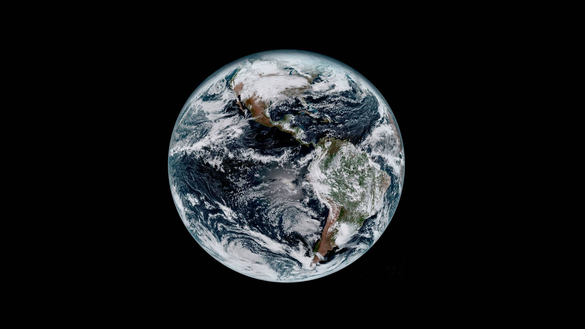

Welcome
😀
Sometimes It's very people who no one imagines angthing
of who do the thing no one can imagine
-
About Me
Age 19
Birthday June 11th
Address Bazhong City, Sichuan Province
e-mail wangym.email@gmail.com
Phone 15882745449
💻Web Design
The programmer's life should have a direction, web design is definitely a good choice
🏓PingPong
Table tennis is the most attractive sport
🍎My favorite fruit 🍇
🎵My favorite song Silhouettes Of You by Isaac Gracie
📽️My favorite movie La vita è bella(美丽人生)
📷My favorite photo 
Fresh water and salt water meet
at the mouth of the Three Rivers near Estartit,
Spain
Every time I see this picture, I feel relaxed and happy
-
Photo album

Today is the 48th Earth Day. The theme of Earth Day 2017 is “Environment and Climate Culture”. Activities include understanding how humans adapt to the global ecosystem, and how to use our position and wisdom to help keep the planet healthy. After all, we only have one earth, so the best thing for us is to take care of our common home.🌏
A battleship salvaged from the sea, I do n’t know how many battles it experienced before it sank🔱

The Tasman Glacier is located on the east side of Mount Cook. Since 1990, as the Tasman Glacier began to melt slowly, the glacier small pool began to condense into a large amount of water to form Tasman Lake.

The salt mine on the hills around the village of Hallstatt is now a favorite tourist attraction, but it used to be the backbone of the local economy. Today, this small village like a fairy tale attracts thousands of tourists every year. Because the beauty of the town is extremely precious, it is rated as one of the most beautiful towns in the world. In 2012, China even built a complete replica of the town.

At the time of Qingming, the smoky Huangshan looming in the misty drizzle. The Ching Ming Festival is also called the Qingqing Festival, at the intersection of Zhongchun and Twilight, which is the 108th day after the winter solstice.
In the noisy city lights, there is a bridge 🌉
-
最美的谎言
今天突然想把积攒许久的电影找一部看看，看到《美丽人生》的时候顿了一下，这部电影我曾在豆瓣看过评分很高。高考完有三个月长长的假期，那段时间我曾恶补了许多经典电影和书籍，《美丽人生》就是其中一部，不过只略微看过开头一段便看不下去，搁在网盘里一直没有看过。一在意大利语听的少没有英语听起来习惯，有点跳戏。二在男主圭多一直油嘴滑舌油腔滑调又不务正业，的样子，实在让人无法喜欢。 如今重新打开这部电影，心里对它并没有多少期待，只是觉得既然是豆瓣高分电影自然有值得看的地方，也是为了清理内存，存的电影太多。电影一开头仍是男主的各种滑稽的表演，油腔滑调，耍小聪明，他很聪明，却总是投机取巧。直到他遇到多拉之后我才渐渐的开始看到他的内心，他的幽默，他的积极向上，和在那个时代背景下最难得的乐观。 圭多聪明，油嘴滑舌，爱扯谎，喜欢投机取巧，但他深爱着多拉，他所做的一切也都只是为了取悦多拉。在他眼里，多拉一直是他的公主，他能一直带给多拉快乐和乐趣，这也是爱情中很重要的一点。嫁给一个永远把你当公主宠着，永远让你开心每天拥有很多乐趣的人才是幸福的。 结婚之后他们过得很幸福，还有了一个儿子叔本华，圭多每天还是会向多拉说：“早安，我的公主。”却在叔本华五岁生日那天，因为圭多有犹太血统，圭多和叔本华都被抓走。当叔本华问起我们要去哪里时，圭多仍然摆出一贯的微笑说是去旅行但却笑着笑着有点眼红，我的心却紧紧的揪住了，眼眶也不觉的发红了。他也不知道未知的旅途会是什么，他们将会被怎样对待，但他仍然用善意的谎言让叔本华安心。突然体会到圭多一贯的撒谎口若悬河都是为了掩饰自己的尴尬，亦或是作为一个犹太人被四处排挤时练就的自嘲和自我安慰罢了，这是种尤为可贵的智慧。突然想起叔本华想要给妈妈买块饼干时门上贴着的“犹太人和狗不得入内”，圭多给叔本华解释说这只是店主的个人喜好不同，还提议在自家书店上也贴上类似的标签。 他一直在小心的维护着叔本华的心灵，不让叔本华被排犹而留下童年阴影。 在犹太集中营的日子里，为了不给叔本华留下阴影，他谎称这是一个游戏，只要得满一千分就可以得到一辆坦克。从进入集中营开始，圭多的每一次的强颜欢笑，每一个谎言和叔本华真挚可爱又期待的小眼神深深刺痛着我。每一次劳作回来每个人都累得倒头便睡，圭多却依然要兴致勃勃的鼓励叔本华，让他开心，小心翼翼不让他怀疑。“就剩我一个小孩了，我不想玩了，爸爸我们回家”，在叔本华要求回家的时候，我多担心圭多无法将这个谎言继续下去，我多害怕叔本华知道这个真相。这个时候的我也像所有在集中营善意的配合圭多的谎言的人一样，不想给这个可爱的孩子心里留下阴影。而圭多机智的做法成功打消了叔本华要走的念头，圭多在雨中放心的笑了，那时候的我也在心里暗暗的松了口气。要是叔本华依然要走，那么圭多该如何收场？如果叔本华知道了真相，那该会在他童年留下多大的阴影？ 圭多用他的智慧，勇敢不断地努力着，他一边小心翼翼的维护着叔本华，一边想方设法的想见到义无反顾跟着他来的多拉。他深爱着她，不想让她受一点苦，在这样苦难的生活之中，圭多依然保持积极心态，为多拉带来小惊喜，告诉她“早安，我的公主”。在最后的关头，他让叔本华躲起来，自己去找多拉，在最后时刻他仍然想着他的公主，他想带她走带她逃离这里。在找多拉无果圭多被抓住时，圭多仍像之前一样，装作若无其事，踢着滑稽的正步笑着走过儿子的眼前，平静的面对死亡。而这个在我刚开始看来是男主搞怪的表现如今却让我潸然泪下，是我一开始就没真正了解到圭多的内心，是我看待事情太过于表面和肤浅了。 在枪响的那一瞬间，心突然崩了一下，我以为他还会再次逃过，就像之前每次捅娄子捣蛋耍怪但还是能顺利逃脱一样，我以为他还会若无其事蹦蹦跳跳地走出来，找到多拉，带着叔本华成功的逃出这个地方。但是直到德国人都走光，所剩无几幸存的犹太人都走了出来，整个集中营空旷只剩叔本华一人，他按照爸爸的话在没有一个人的时候小心翼翼的走了出来，然后他就真的坐上了坦克，开心的大眼睛扑闪扑闪的时候，我的眼泪再也止不住了，嗓子就像被什么东西堵住说不出话来。我担心叔本华一人要如何生活，我在想多拉是不是已经不在了，我在想圭多在被枪射中的那一刻想着的是什么，他是笑着的还是遗憾还是担忧呢。 这部电影的背景是在当时反犹运动尤为激烈的意大利的时期，很幸运的今年刚好修过一门《犹太文明的当代启示》这门课，给我们授课的是我们学校人文社科学院的院长王老师，，通过这门课让我对犹太文明产生了莫大的崇拜和敬仰之情，也对犹太人有了不一样的认识和理解。在没有接触这门课之前，我对犹太人一无所知，只是对他们在二战期间被纳粹大肆屠杀感到悲哀和怜悯，至于其中因果，并没有深入去了解过。记得在课堂上王老师曾经提到过在当时的店铺的橱窗上都贴着“犹太人和狗不得入内”的字样时我并没有多大触动。但在看完这部电影之后，再想起这句话来才发现是多么的讽刺啊！对于任何一个犹太人来说，这些字眼深深的伤害到他们的心灵和民族自豪感，难道犹太人就是卑微可耻的吗？难道人们会因种族的不同而有高低贵贱之分吗？不！这是荒谬的，甚至是无知而又可笑的！犹太人聪明，智慧，虔诚，是一个伟大而又神奇的民族！他们占据世界最少的人口却是获得诺贝尔奖人数最多的！他们人均读书量一直名列榜首！他们有很多值得我们学习的地方，他们懂得感恩，懂得知足，虔诚的生活，时刻反思自己的过错，即使他们被驱逐自己的家园，被杀戮，却仍然忏悔祷告，期待着美好的明天。 很欣慰如今这种种族歧视已经不复存在，很难过那些曾经被种族歧视所深深伤害过的小孩和大人们，还有圭多。 这部电影通过小人物的一生勾勒出了一个大时代背景下的悲剧。《美丽人生》是一部童话，圭多在阴影笼罩下的纳粹集中营中用生命为叔本华点亮了一盏爱的烛光，这浓浓的父爱让每一个看过他的人都禁不住泪流满面。
-
爱是一种力量，让我们超越时空感知它的存在
小时候居住的城市有着令人惊叹的重工业和灰黄色的天空，在夜晚，除了朦胧的月球，偶尔也只能一瞥天狼星和金星摇曳的身姿。第一次与银河的会面是在天文馆的投影穹幕里，外表奇异的投影仪冷静的转动，将无数光点铺满头顶。这固然比不上若干年后在海滨散步时与这条雄伟光带真身那场震撼的不期而遇，但足以让我在儿时就感受到了康德式的感动：让人肃然起敬的，不仅仅是老师家长的教诲，还有头顶这片神秘诱人的天空。 很长一段时间，几乎不放过任何太空和宇宙题材的书籍与影视作品。时至今日，也仍然会为一部电影的上扬而激动，有星空，有诺兰，夫复何求。在几个月的关注后，终于得以一睹诺兰在Interstellar之中构建的太空世界。些许是期望过高，对影片本身的观感略复杂。即使观影时面对太空一直血脉贲张，回想时仍然会稍觉有所缺憾。对于诺兰而言，个人以为，这部电影应该能够更好。抛去个人的吹毛求疵，却还是愿意为电影打上五星，并非作为诺兰的粉丝，而是那遥远星空的粉丝。 旅途的终点 这部影片的内核是一部亲情剧，是一则关于父亲和女儿之间的爱与承诺的故事。影片让人类最真实最温暖的情感与守候自然地渗入到太空移民这样一个宏大而充满悲壮感的人类史诗当中。在一个宏大的叙事中包裹真诚的情感，这正是诺兰所擅长的，其操控和表达无疑已经出神入化。在本片中，拯救子女与人类未来的使命感，与父女之间相互守候的深情，对立统一地构成了古典的戏剧冲突，并几乎时刻作为主人公的动机推进剧情。 本片的三幕式推进与情感线索密不可分。开端时，父女生活先行铺垫了二人的感情以及必要的伏笔。前NASA飞行员Cooper本来在生态环境日趋恶化的地球上作为农民养家糊口，与岳父和一儿一女共同生活，而与古灵精怪的女儿Murphy尤其性情相投。在女儿房间“幽灵”这一超自然存在的启示下，Cooper父女发现了远避人世的NASA和他们暗中筹划的计划。Cooper接受了Brand教授的任务，其主要动机仍是保护自己的孩子和他们的未来，但女儿对此并不认可。在Cooper离开时，原本融洽的父女亲情由此断裂，二人的沟通也随着父女空间和时间上不可逾越的距离而渐趋消逝二人在空间和情感上产生分离。 在发展与对抗阶段，Cooper一行乘坐Endurance号进行的探索任务作为主线，却接连遭受重大挫折，对任务的责任与对女儿的承诺逐渐开始冲突。由于黑洞时间延迟效应的影响，Murphy已长大并辅助Brand教授理论研究，作为副线的中心人物登场。整个计划真相的揭露，使其对人类未来的信心产生动摇，而对父亲的矛盾心情与日俱增。在中后段的蒙太奇的交接中，父女二人的命途同时进入低谷，遭遇生死与信任的重大危机，但仍然在各自的时空中进行着顽强的抗争。 结局或解决篇中，Cooper和Murphy的双线最终在叙事和情感上汇流统一。Cooper关键时刻舍弃自我，而选择了保全Amelia和人类的未来；Murphy从迷惘中振作，决定回到对父亲情感与回忆的起点寻找一线希望。但殊途同归，被吸入黑洞的Cooper发现身处奇异的多维世界，重新和女儿心意相通，并意识到了自己的真正使命；Murphy感应到父亲的思念，借助Cooper利用重力传递的信息，获得了掌控重力理论的关键数据。 当然，被时间和空间分隔的二人最终还是得以重新相聚，Cooper履行了自己回家的诺言，Murphy的理论拯救了人类。再会之后，Cooper再一次踏上旅途，无所牵挂地前往Amelia所在的人类新家园。 这个故事演绎的是一段的的确确穿越了时间与空间的父女真情，虽然“穿越时空的爱”这一题材已经被无数言情奇幻网络小说搞得烂大街，但本片却能让人潸然泪下，因为它如此纯粹而真实，和我们的生活如此相似。Cooper没有怀抱“我的征途是星辰大海”的凌云壮志，只是想赶快完成任务尽早回到女儿身边陪伴她成长。在人类危急存亡之秋，Murphy最终选择的避风港仍然是和父亲有着最多回忆的地方。 2001年曾经有一部动画短片《父与女》，片长仅8分钟，故事很简单：父亲在最后一个拥抱后坐船离去，女儿日复一日地来到湖边守望父亲的归来，直到长大，结婚，老去。已经是老妇人的女儿最终来到业已干涸的湖中，找到父亲离去的船，躺到里面，像回到父亲怀中。 这份生命的守候，同样跨越了Murphy的一生，但幸运的是，她知道父亲一直没有放弃，即便横亘亿万光年，父亲也在试图守候着她，这份信念也最终支持她见到父亲最后的那一面。 对Cooper而言，他对于承诺和任务所有的坚持，都是出于爱。航程的灯塔，旅途的终点，始终是女儿所在的地方。
-
间隔十年看了两遍。 十年前看他，怕他在门前回头。 十年后看他，怕他在门外后悔。 外面的世界过于险恶，习惯了周边被设定好的情节，当变成谁都不可预料的时候，会不会手足无措。
Blog
09 May 2020
最美的谎言
02 May 2020
星际穿越
02 Apr 2020
楚门的世界
-
Contact
Bazhong
15882745449
wangym.email@gmail.com